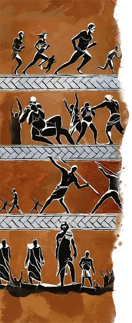

Атлет
Athlete

Вы стремитесь совершенствоваться физически и во всем, что делаете. Острые ощущения от соревнований зажигают огонь в вашей крови, а рев толпы толкает вас вперед. Рассказы о ваших подвигах предшествуют вам и могут открыть двери или развязать языки.
Будь то в одном из полисов, между ними или среди нечеловеческих народов Тероса, физические состязания и те, кто их преследует, вызывают уважение, граничащее с почтением. Атлеты происходят из всех слоев общества и из всех культур и довольно часто пересекаются друг с другом.
Владение навыками: Атлетика, Акробатика.
Языки: Один на ваш выбор.
Владение инструментами: Транспорт (сухопутный).
Снаряжение: Бронзовый диск или кожаный мяч, талисман на удачу или трофей прошлого, комплект дорожной одежды и мешочек с 10 зм.
Избранное событие
Хотя многие спортсмены практикуются в различных играх и соревнованиях, большинство из них преуспевает в одном виде соревнований. Совершите бросок по таблице «Избранное событие» или выберите один из вариантов, чтобы определить спортивное событие, в котором вы преуспели.
Избранное событие
| к8 | Событие |
| 1 | Марафон |
| 2 | Бег на длинные дистанции |
| 3 | Борьба |
| 4 | Бокс |
| 5 | Езда верховая или на колесницах |
| 6 | Панкратион (смешанные бои без оружия) |
| 7 | Гонки гоплитов (бега в полном обмундировании отрядами) |
| 8 | Пентатлон (бег, прыжок в длину, метание диска, метание копья, борьба) |
Умение: Отголоски победы
Вы вызвали восхищение зрителей, коллег-спортсменов и тренеров в регионе, где проходили ваши прошлые спортивные победы. При посещении любого поселения в пределах 100 миль от того места, где вы выросли, есть 50-процентная вероятность, что вы найдете там кого-то, кто восхищается вами и готов предоставить информацию или временное убежище.
В перерывах между приключениями вы можете участвовать в спортивных мероприятиях, достаточных для поддержания комфортного образа жизни, как описано в разделе «Работа по профессии».
Персонализация
Конкуренция может создать прочные связи между товарищами по команде и соперниками или разжечь ожесточенные распри, которые разгораются за пределами арены. Спортсмены часто применяют уроки своих тренировок к своей жизни в целом.
| к8 | Черта характера |
| 1 | Я чувствую себя наиболее спокойно во время физических нагрузок, будь то упражнения или битвы. |
| 2 | Я не люблю сидеть сложа руки. |
| 3 | У меня есть распорядок дня, который я отказываюсь нарушать. |
| 4 | Существуют препятствия, которые необходимо преодолеть. |
| 5 | Когда я вижу, как другие борются, я предлагаю помощь. |
| 6 | Я люблю обмениваться шутками и насмешками. |
| 7 | Все, что стоит делать, стоит делать лучше всех. |
| 8 | Меня раздражает, если люди хвалят кого-то другого, а не меня. |
| к6 | Идеал |
| 1 | Соревнования. Я стремлюсь проверять себя во всем. (Хаотичный) |
| 2 | Триумф. Лучшая часть победы - это то, что мои соперники терпят поражение. (Злой) |
| 3 | Товарищество. Самые прочные узы выковываются в борьбе. (Добрый) |
| 4 | Люди. Я стремлюсь вдохновить своих зрителей. (Нейтральный) |
| 5 | Традиция. В каждой игре есть правила, и игровое поле должно быть на уровне. (Законно) |
| 6 | Рост. Уроки кроются в победе и поражении. (Любой) |
| к6 | Привязанность |
| 1 | Мои товарищи по команде - моя семья. |
| 2 | Я одолею соперника и покажу своё превосходство. |
| 3 | Моя ошибка причинила боль кому-то. Я больше никогда не совершу эту ошибку. |
| 4 | Я буду лучшим для чести и славы моего дома. |
| 5 | Человек, который тренировал меня - самый важный человек в моем мире. |
| 6 | Я стремлюсь соответствовать примеру конкретного героя. |
| к6 | Слабость |
| 1 | У меня есть привычка, которая угрожает моей репутации или здоровью. |
| 2 | Я сделаю все, чтобы победить. |
| 3 | Я игнорирую всех, кто не участвует в соревнованиях, и всех, кто мне проигрывает. |
| 4 | У меня затяжная боль из-за старых травм. |
| 5 | Любое поражение или неудача с моей стороны происходит из-за жульничества оппонента. |
| 6 | Я должен быть капитаном любой группы, к которой присоединяюсь. |
Мифы об ироанских играх
Участники, стремящиеся занять место среди легендарных спортсменов, бесконечно стремятся одержать победу во всемирно известном ежегодном соревновании в Акросе — Ироанских играх. Деяния прошлых победителей устанавливают высокую планку для тех, кто следует за ними.
Еще не забыт знаменитый борец Ланатос, который победив всех соперников и, после долгой борьбы, одолел дикого акроанского быка.
Когда состязание панкратиастки Нимосины было прервано атакой циклопа, она швырнула своего соперника в существо, а затем голыми руками свернула зверю шею.
Наверное, наиболее драматичной была недавняя победа акроанской охотницы Ариссы. В ожидании своего второго места, Арисса стала свидетелем того, как летучая мышь из Никса вырвала младенца из толпы. Охотница бросила свое копье на невозможное расстояние, проткнув летучую мышь и поймала падающего ребенка. Совместно другие собравшиеся участники вручили Ариссе свои награды, и охотница заявила о своем гражданстве Акроана в ответ.
Кто знает, какие легенды будут разворачиваться во время Ироанских игр в следующем году?